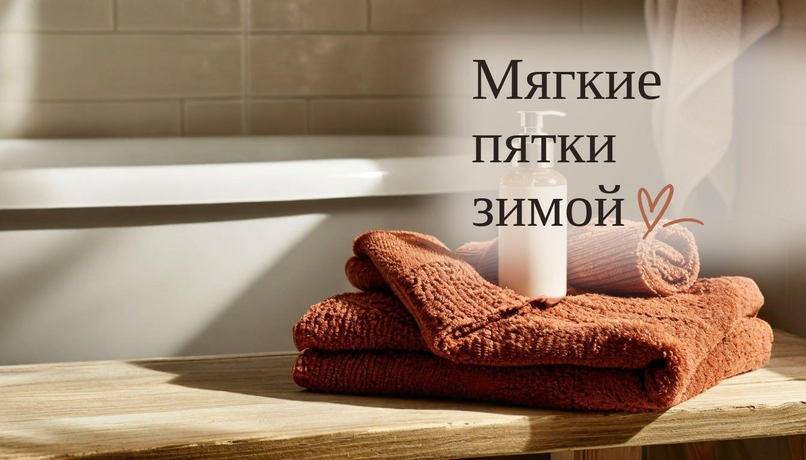
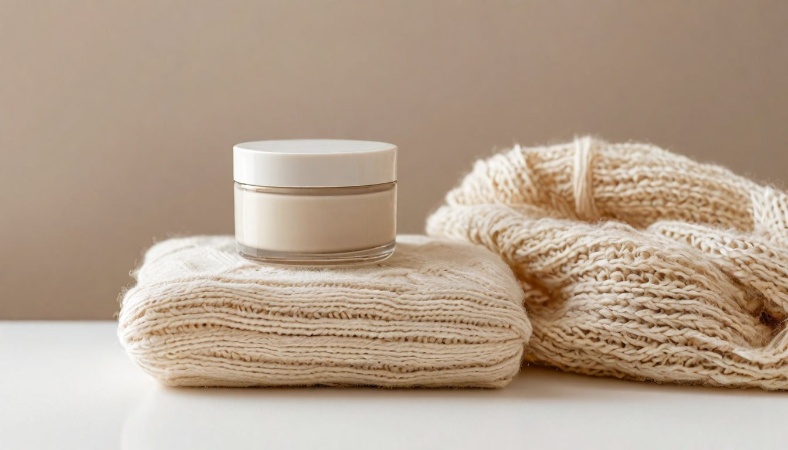

Пятки трескаются: что делать дома и 5 привычек, которые мешают коже

Летом пятки были в порядке, а в октябре кожа на них вдруг огрубела и пошла мелкими трещинками, которые цепляются за колготки.
Трескаются пятки чаще всего не из-за нехватки витаминов, как часто думают, а из-за сухости. Кожа на пятках толстая, сальных желёз в ней почти нет, и когда воздух в квартире пересыхает, она теряет эластичность и лопается при ходьбе.
У многих это совпадает с включением отопления: когда в квартире топят батареи, кожа сохнет везде, от рук до пяток. Вот пять привычек, из-за которых пяткам становится хуже, и что с этим можно сделать дома.
Привычка №1: срезать огрубевшую кожу
Кажется, что если убрать жёсткий слой лезвием или тёркой «до гладкости», трещины исчезнут. На деле кожа отвечает на такую травму ещё более быстрым ороговением, и через неделю она снова жёсткая.
Что делать: раз в неделю после тёплой ванночки аккуратно пройтись пемзой или мягкой пилкой по влажной коже. Без усилия и без лезвий. Тёплой воды достаточно, горячая не нужна, а в ванночку можно добавить ложку соды или немного жидкого мыла.
Привычка №2: горячий душ и долгие ванны
Горячая вода смывает с кожи защитный жировой слой. Пятки после неё становятся мягкими на полчаса, а потом пересыхают сильнее, чем были.
Что делать: мыться тёплой водой, а ноги после душа промокнуть полотенцем, не растирая, особенно между пальцами. Чем дольше кожа остаётся влажной, тем быстрее она потом пересыхает.

Привычка №3: крем «когда вспомню»
Обычный крем для рук или тела для пяток слишком лёгкий. А если наносить его раз в неделю, кожа не успевает накопить влагу.
Что делать: каждый вечер наносить плотный крем для ног, лучше с мочевиной в составе: она смягчает грубую кожу. Сверху надеть хлопковые носки, чтобы крем впитался за ночь, а не остался на простыне. Хватит количества с горошину на каждую пятку, втирать круговыми движениями.
Привычка №4: ходить дома босиком по полу
Холодный пол, ламинат и плитка сушат пятки, а при каждом шаге кожа растягивается и трескается по краю. Особенно это заметно у тех, кто всё лето ходил в открытой обуви.
Что делать: дома носить мягкие закрытые тапочки или носки. Это та самая мелочь, которую легче всего поменять уже сегодня. А дети, которые всё время бегают босиком, тоже будут рады тёплым носкам с прорезиненной подошвой.
Привычка №5: не замечать сухой воздух
С началом отопления влажность в квартире падает, и кожа теряет воду со всего тела, а пятки страдают первыми.
Что делать: проветривать и по возможности держать влажность около 40–60%. Помогает увлажнитель в спальне на ночь, а если его нет, миска с водой у батареи и проветривание по десять минут несколько раз в день.
Когда нужен не крем, а врач
Если трещины глубокие, кровоточат, болят при ходьбе или не проходят за пару недель ухода, это повод показаться врачу. Домашний уход хорош для сухой кожи, но не заменяет лечение. То же касается трещин, которые появились вместе с зудом или покраснением: здесь лучше не экспериментировать с кремами.
От автора
Пятки, наверное, самая забытая часть тела в уходе. Мы вспоминаем о них, когда уже больно или когда пора надевать открытую обувь. А им нужно совсем немного: тёплая вода, крем на ночь и носки.
Осенью у меня и так много забот с детьми, кошкой и домом. Поэтому мне нравится, что этот уход занимает две минуты перед сном и не требует ничего особенного.
Подписывайтесь, чтобы не пропустить следующий разбор: перекус в школу, который ребёнок действительно съест, а не принесёт обратно.
А у вас пятки тоже начинают сохнуть именно осенью?